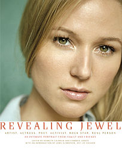

New York Times bestselling poet and multi-platinum singer-songwriter Jewel explores her unconventional upbringing and extraordinary life in an inspirational memoir that covers her childhood to fame, marriage, and motherhood.
When Jewel’s first album, Pieces of You, topped the charts in 1995, her emotional voice and vulnerable performance were groundbreaking. Drawing comparisons to Joan Baez and Joni Mitchell, a singer-songwriter of her kind had not emerged in decades. Now, with more than thirty million albums sold worldwide, Jewel tells the story of her life, and the lessons learned from her experience and her music.
Living on a homestead in Alaska, Jewel learned to yodel at age five, and joined her parents’ entertainment act, working in hotels, honky-tonks, and biker bars. Behind a strong-willed family life with an emphasis on music and artistic talent, however, there was also instability, abuse, and trauma. At age fifteen, she moved out and tasked herself with a mission: to see if she could avoid being the kind of statistic that her past indicated for her future. Soon after, she was accepted to the prestigious Interlochen Arts Academy in Michigan, and there she began writing her own songs as a means of expressing herself and documenting her journey to find happiness. Jewel was eighteen and homeless in San Diego when a radio DJ aired a bootleg version of one of her songs and it was requested into the top-ten countdown, something unheard-of for an unsigned artist. By the time she was twenty-one, her debut had gone multiplatinum.
There is much more to Jewel’s story, though, one complicated by family legacies, by crippling fear and insecurity, and by the extraordinary circumstances in which she managed to flourish and find happiness despite these obstacles. Along her road of self-discovery, learning to redirect her fate, Jewel has become an iconic singer and songwriter. In Never Broken she reflects on how she survived, and how writing songs, poetry, and prose has saved her life many times over. She writes lyrically about the natural wonders of Alaska, about pain and loss, about the healing power of motherhood, and about discovering her own identity years after the entire world had discovered the beauty of her songs.
ISBN-13: 9780399174339
Publisher:Penguin Publishing Group
Publication date:09/15/2015
Pages:384
Product dimensions: 5.90(w) x 9.10(h) x 1.40(d)

Introduction by Atz Lee Kilcher
Edited by Kenneth Calhoun and Cambria Jensen
Atria Books, June 2003 ( 96 pages, $15.00 )
Trade Paperback, ISBN: 0-743-47540-2
BIOGRAPHY & AUTOBIOGRAPHY/General
Learn more about Revealing Jewel at simonsays.com
Arranged for Piano/Guitar with Lyrics. Sessions at AOL are filmed in an intimate environment resulting in an up-close look that captures the genuine live session recording vibe. This personality songbook brings you one step closer to your favorite artists who have been a part of these special performances created by AOL Music. Our folio features exclusive photos of the artists from their actual sessions! Titles (and artists) are: The Scientist (Coldplay) * Work It (Missy Elliott) * Mobile (Avril Lavigne) * Someday We'll All Be Free (Alicia Keys) * Are You Happy Now? (Michelle Branch) * Awnaw (Nappy Roots featuring Jazze Pha) * Intuition (Jewel) * Break You Off (The Roots) * The Jump Off (Lil' Kim featuring Mr.Cheeks) * My Friends Over You (New Found Glory) * A Thousand Miles (Vanessa Carlton) * Sinking In (Lisa Marie Presley) * No Letting Go (Wayne Wonder) * Follow Through (Gavin DeGraw).
Paperback: ; Dimensions (in inches): 0.23 x 11.78 x 9.02
Publisher: Warner Bros.; (May 2004)
Language: Published in English
ISBN: 0757919758
You can purchase this at several locations including amazon.com and BN.com.